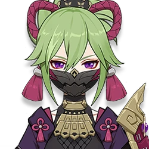
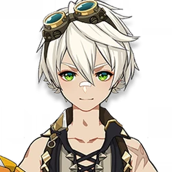

Team building in Genshin Impact is key to success in challenges like domains and the Spiral Abyss. A strong team usually includes a Main DPS, one or two Sub DPS, and one or two Support characters. The Main DPS deals most of the damage, while Sub DPS characters provide additional damage off the field. Support characters offer healing, shielding, or crowd control.
Here are a few examples of some common teams in Genshin Impact:
| Main DPS | Sub-DPS | Sub-DPS/Support | Support |
|---|---|---|---|
 |
.webp) |
||
|  | |||
|  | |||